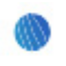

VoxqubeВидео
«Voxqube» преобразует речевую запись в письменный материал.
Раздел «Для контент-менеджеров»: варианты ИИ для этой задачи, описания возможностей и переходы к обзорам. Сравните несколько решений на одинаковом примере.
Соберите темы, исходные материалы и владельцев сведений. В Молекуле можно составить редакционный список и определить, какие вопросы мешают подготовить конкретную публикацию.
Из этих заметок составь план материалов о нашей мастерской. Для каждой темы укажи источник, формат и недостающий факт. Не назначай дату публикации без согласования команды.

«Voxqube» преобразует речевую запись в письменный материал.
«Wave.Video» создаёт видеоматериал по заданию. «Wave.Video» также помогает подготовить персонализированный видеоматериал.

Descript связывает монтаж аудио и видео с текстовой расшифровкой. Позволяет менять запись через её содержание, обрабатывать звук и готовить короткие версии материала.
«Postly» работает с материалами для социальных площадок.

PresentSimple AI создаёт презентации по текстовому описанию или загруженному материалу. Сервис подготавливает структуру и тексты слайдов, включая таблицы и инфографику. Результат доступен в редактируемом PowerPoint или PDF, а поддержка разных языков дополняет подготовку материалов, в том числе на русском.
Для «Summarize Tech» сначала определите свою задачу и требуемый результат. Карточка относится к направлению «Видео».
ytRank AI помогает готовить поисковое оформление видео для YouTube. В наборе предусмотрены популярные ключевые слова, работа над SEO ролика и создание заголовков. Продукт ориентирован на подготовку этих текстовых элементов, соединяя исследование тем с представлением публикации, но не гарантируя определённый рост канала после размещения.
Думатель отвечает на вопросы по загруженным материалам и подготавливает отчёты с таблицами. Российский сервис работает с документами и сканами, а также аудио и видео. Индексирование и RAG связывают ответы с исходным содержанием; в результатах предусмотрены ссылки на первоисточник.
«AI Studios» получает речевую запись из текста.
Для «Airpost» сначала определите свою задачу и требуемый результат. Карточка относится к направлению «Видео».
Nexlev помогает искать направления контента на YouTube с участием ИИ. Инструмент рассматривает спрос и предложение, анализирует ключевые слова и конкурентов. Дополнительные сведения включают показатели канала и оценку доходов, чтобы сопоставлять интересующую нишу с данными о её текущем состоянии.
Slidy AI готовит презентации на основе введённого текста или загруженного документа. Сервис подбирает структуру слайдов, цветовое решение и расположение содержимого. В браузере предусмотрен редактор, а результат можно сохранять в PPTX, PDF и PNG, связывая генерацию первоначального варианта с его последующей правкой.
«Voicely 2.0» представлен в разделе «Создание контента». При выборе проверьте нужную операцию и условия работы с результатом.
Для «Beehiiv» сначала определите свою задачу и требуемый результат. Карточка относится к направлению «Email».
«BlogSEO AI» помогает с задачами поискового продвижения.
Сравнивать «BlogToVideoAI» с другими инструментами раздела «Видео» удобнее на одинаковом исходном материале.
«EasySub» преобразует речевую запись в письменный материал. Дополнительно «EasySub» работает с текстом субтитров.
Сравнивать «Pillar» с другими инструментами раздела «Продуктивность» удобнее на одинаковом исходном материале.
«YarnIt (yarnit.app)» представлен в разделе «Создание контента». При выборе проверьте нужную операцию и условия работы с результатом.
«Метранпаж» работает с материалами для социальных площадок.
«AI Stream Companion» получает речевую запись из текста.
«Airuco.ru» помогает с задачами поискового продвижения. Дополнительно «Airuco.ru» работает с материалами для социальных площадок.
Сравнивать «Dr. Lambda» с другими инструментами раздела «Создание контента» удобнее на одинаковом исходном материале.
Gling помогает редактировать необработанные видео и аудио, убирая паузы и лишние фрагменты. Сервис ориентирован в том числе на подготовку роликов для YouTube. После автоматической обрезки просмотрите переходы между репликами: ускорение записи не должно удалять часть мысли, менять интонацию или превращать оговорку в категоричное утверждение.
Сравнивать «Hellohola» с другими инструментами раздела «Видео» удобнее на одинаковом исходном материале.
«Qlip AI» работает с материалами для социальных площадок. Дополнительно «Qlip AI» помогает подготовить персонализированный видеоматериал.
Replix создаёт контент и предоставляет анализ настроения текста. Инструмент предназначен для частных пользователей и компаний, которые подготавливают материалы для своего присутствия в интернете. Эти средства связывают генерацию содержания и рассмотрение его эмоциональной подачи в рамках работы над выбранной публикацией или сообщением.

Vsub используют, чтобы собирать видеосцену по описанию или визуальному исходнику. Ещё одно направление работы: готовить видеоматериалы для публикации.
«WizGenerator» работает с материалами для социальных площадок.
Wordybot помогает подготавливать развёрнутые тексты на русском языке, включая статьи и учебные работы. Сервис составляет план и предоставляет встроенный редактор для изменения фрагментов. Экспорт в Word дополняет создание книг, сценариев и бизнес-планов, связывая подготовку материала с дальнейшим редактированием документа.
«Yarn.co» подготавливает короткие фрагменты видеозаписи. Дополнительно «Yarn.co» создаёт видеоматериал по заданию.
КонспектGPT подготавливает структурированные учебные заметки из файлов и записей лекций. Российский сервис также расшифровывает аудио и видео, решает задачи по фотографии и создаёт учебные работы. Эти возможности объединяют обработку исходного материала и подготовку письменного содержания для дальнейшего изучения темы.
«AI Valentine by Movio» создаёт видеоматериал по заданию. «AI Valentine by Movio» также помогает подготовить персонализированный видеоматериал.
Для «Blog Booster» сначала определите свою задачу и требуемый результат. Карточка относится к направлению «Создание контента».
Study AI даёт доступ к разным нейросетям через общий русскоязычный кабинет. Сервис поддерживает работу с текстами и учебными материалами, подготовку презентаций и создание визуального контента. Среди направлений есть изображения и видео; условия доступа ориентированы на пользователей из России с расчётами в рублях.
«Waverly» представлен в разделе «Создание контента». При выборе проверьте нужную операцию и условия работы с результатом.

Zeemo создаёт субтитры для видео и предоставляет средства их дальнейшей правки. Пользователь может работать с динамическим оформлением, переводить текст и редактировать субтитры группами. Дополнительные видеоинструменты служат для подготовки публикаций, где нужно сочетать исходный ролик с читаемым текстовым сопровождением на разных языках.
«Addlly AI» помогает с задачами поискового продвижения. «Addlly AI» также работает с материалами для социальных площадок.
«DeepReel» создаёт видеоматериал по заданию. «DeepReel» также помогает подготовить персонализированный видеоматериал.
Сравнивать «PodCut» с другими инструментами раздела «Создание контента» удобнее на одинаковом исходном материале.
Сравнивать «Summify (summify.io)» с другими инструментами раздела «Видео» удобнее на одинаковом исходном материале.
Сравнивать «SumyAI» с другими инструментами раздела «Видео» удобнее на одинаковом исходном материале.
«Voxxio» помогает развивать текст истории.
Страница 2 из 2